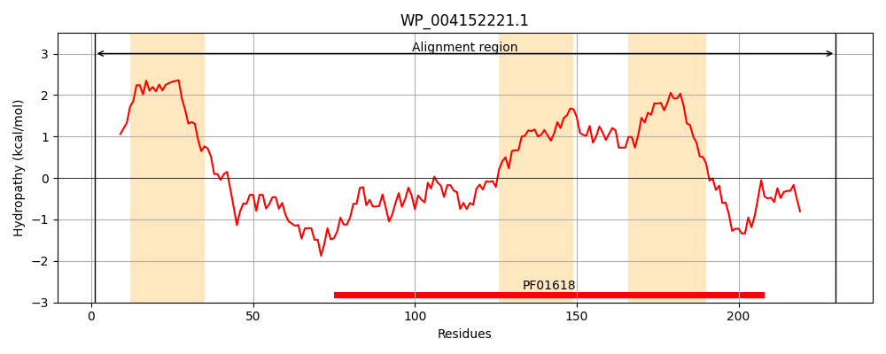
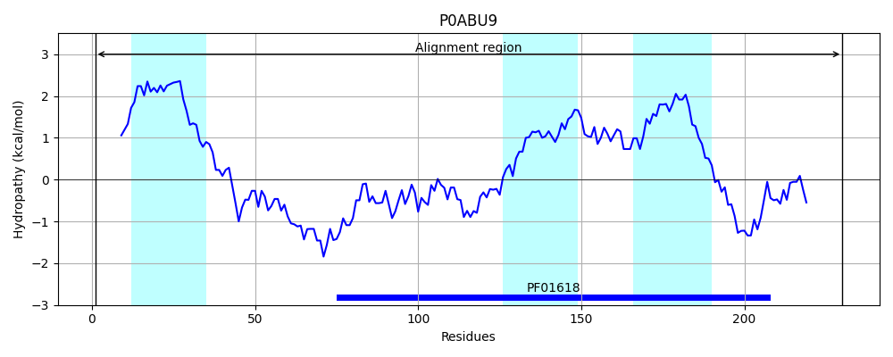
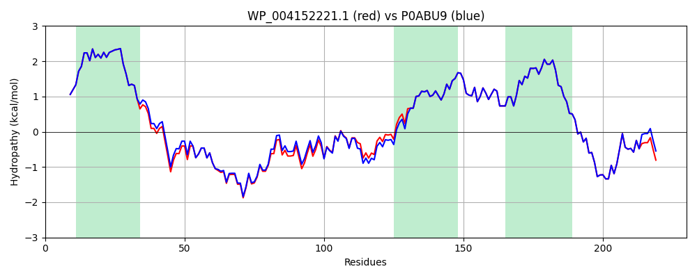

Hit Accession: P0ABU9
Hit TCID: 1.A.30.2.2
Hit Description: gnl|BL_ORD_ID|8725 gnl|TC-DB|P0ABU9|1.A.30.2.2 Protein tolQ - Escherichia coli.
Mach Len: 230
e:0.000000
Query TMS Count : 3
Hit TMS Count: 3
TMS-Overlap Score: 3.650000
Predicted Substrates:CHEBI:9175;sodium(1+), CHEBI:5584;hydron
BLAST Alignment:
Score: 1127 , Bit scores: 438 bits, E-value: 6.7e-159, Alignment length: 230, Percentage identity: 97
Query: 1 MTDMNILDLFLKASLLVKLIMLILIGFSIASWAIIIQRTRILNSAAREAEAFEDKFWSGIELSRLYQESQGRRDNLTGSEQIFYSGFKEFARLHRANSHAPEAIVEGASRAMRISMNRELETLETHIPFLGTVGSISPYIGLFGTVWGIMHAFIALGAVKQATLQMVAPGIAEALIATAIGLFAAIPAVMAYNRLNQRVNKLELNYDNFMEEFTAILHRQAFTTSESNKG 230
MTDMNILDLFLKASLLVKLIMLILIGFSIASWAIIIQRTRILN+AAREAEAFEDKFWSGIELSRLYQESQG+RDNLTGSEQIFYSGFKEF RLHRANSHAPEA+VEGASRAMRISMNRELE LETHIPFLGTVGSISPYIGLFGTVWGIMHAFIALGAVKQATLQMVAPGIAEALIATAIGLFAAIPAVMAYNRLNQRVNKLELNYDNFMEEFTAILHRQAFT SESNKG
Sbjct: 1 MTDMNILDLFLKASLLVKLIMLILIGFSIASWAIIIQRTRILNAAAREAEAFEDKFWSGIELSRLYQESQGKRDNLTGSEQIFYSGFKEFVRLHRANSHAPEAVVEGASRAMRISMNRELENLETHIPFLGTVGSISPYIGLFGTVWGIMHAFIALGAVKQATLQMVAPGIAEALIATAIGLFAAIPAVMAYNRLNQRVNKLELNYDNFMEEFTAILHRQAFTVSESNKG 230 | Protein Hydropathy Plots: |
|---|
|  |  |
Pairwise Alignment-Hydropathy Plot:
|
|---|
|  |